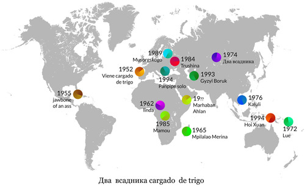

Dos Jinetes-Cargado de Trigo
Esta canción está compuesta con 19 loops procedentes de 14 canciones diferentes. En este mapa puedes ver de donde procede cada canción y su fecha de grabación.
This song is made with 19 loops from 14 different songs. On this map you can see where each song comes from, and the recording date.

Las 14 canciones usadas están en los siguientes discos:
{kind=link}
Hakasskii
Два всадника (dos jinetes)
1974
Khakassian folklore
Performed by Stepan Kadyshev and Mikhail Kilchichakov
Recordings 1974 1978, published 1982. Мелодия С32-17095 (7'')
zhuzhulingo

MarhabanAhlan
Hello,Welcome
19??
Mohammed Ben Mohammed Ba-Soweid - Marhaban Ahlan
Dust to digital
{kind=link}
JawboneOfAnAss
jawbone of an ass
1955
musica de cuba pre-castro, roving carnival band
listentoyourears
{kind=link}
Linda
Musique de danse avec xylophone
1962
Musique Centrafricaine, región de Bambari
differentwaters
{kind=link}
Mamou Franco
et le T.P. OK Jazz
1985
rhythmconnection
Congo
{kind=link}
{kind=link}
Musorgskogo
Aw, zaynka, ah, serenkyy
1989
Tunes from Mussorgsky's homeland (Pskov)
zhuzhulingo
{kind=link}
VieneCargadoDeTrigo
Manuela Lema Santos, Maruxa Lema Santos
Corcubión, Galicia 1952
lemoncat
{kind=link}
MpilalaoMerina
Ravolema Fenomanana
1965
musique merina, madagascar
freedomspear
{kind=link}
Trushina
Songs of Smolensk Podneprov'ye
1984
Sung by Olga Trushina
smolensk rusia occidental
zhuzhulingo
{kind=link}
{kind=link}
{kind=link}
{kind=link}